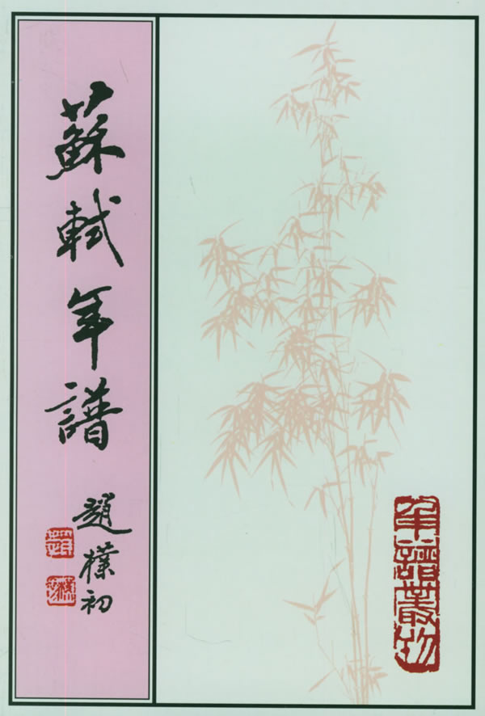
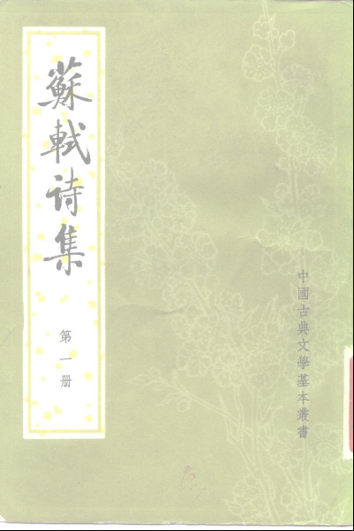
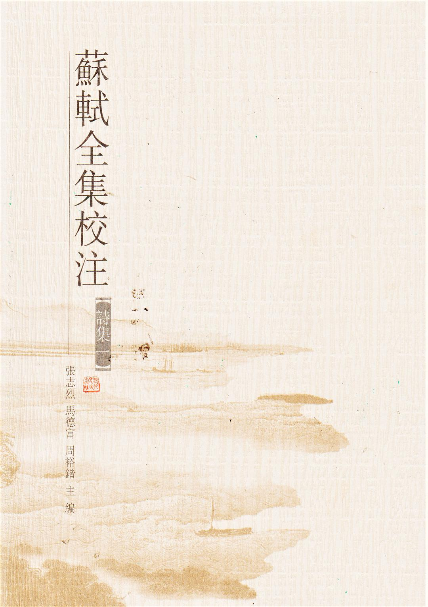

文献资料 & 图书
陆续补充......
来源网络

苏轼年谱（上），孔凡礼撰
《苏轼年谱》自1998年2月出版后，深受学界关注，并荣获第四届国家图书奖提名奖。

苏轼年谱（中），孔凡礼撰
《苏轼年谱》自1998年2月出版后，深受学界关注，并荣获第四届国家图书奖提名奖。

苏轼年谱（下），孔凡礼撰
《苏轼年谱》自1998年2月出版后，深受学界关注，并荣获第四届国家图书奖提名奖。
苏轼文集（一），孔凡礼点校
本套书收录了苏轼一生的鸿篇巨著。内容丰富资料翔实，是苏学研究者和广大古文学爱好者的一套很具价值的参考书。

苏轼诗集（全八册），王文诰辑注
《苏轼诗集》内容包括了苏轼的诗词作品，全集本与分类注本迭经翻刻，集注本与编年注本未见流传，选注、选评苏诗成为社会风尚。

苏轼全集校注（诗集部分）
《苏轼全集校注》是第一部对宋代大文豪苏轼的诗集、词集、文集进行全面校勘注释编年辑佚的大型古籍整理著作，代表了当代苏轼诗词文集整理的最高水平。为苏轼研究提供了一个校勘精良、注释完善、编年准确、评论充分的上佳版本，为宋代文化研究呈献出一部资料翔实的百科全书式的著作。 本书由张志烈、马德富、周裕锴担任主编。

苏轼全集校注（文集部分）
《苏轼全集校注》是第一部对宋代大文豪苏轼的诗集、词集、文集进行全面校勘注释编年辑佚的大型古籍整理著作，代表了当代苏轼诗词文集整理的最高水平。为苏轼研究提供了一个校勘精良、注释完善、编年准确、评论充分的上佳版本，为宋代文化研究呈献出一部资料翔实的百科全书式的著作。 本书由张志烈、马德富、周裕锴担任主编。